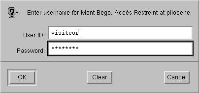

V- PRINCIPES GENERAUX D'UTILISATION
1- Niveaux de connexion
Pour saisir/consulter la base, il suffit de lancer n'importe quel
navigateur
web que ce soit en mode graphique ou bien en mode texte (auquel cas les
images ne sont pas consultables) et de se connecter à l'adresse
http://pliocene.unice.fr/cgi-bin/bego/main.py.

L'accès à la base de donnée est restreint avec des mots de passe. Il y a quatre niveaux de connexion à la base qui sont par ordre croissant des permissions données.
un niveau "visiteur" qui autorise seulement la consultation.
De plus, l'effacement des tables, la modification de la structure de la base et les droits d'accès ne sont pas modifiables depuis l'écran de requêtes SQL, ce qui garantit un certain niveau de sécurité puisque seul l'administrateur de la base peut effectuer ces opérations.
Pour changer de niveau de connexion, il suffit de relancer le
navigateur
internet que l'on utilise.